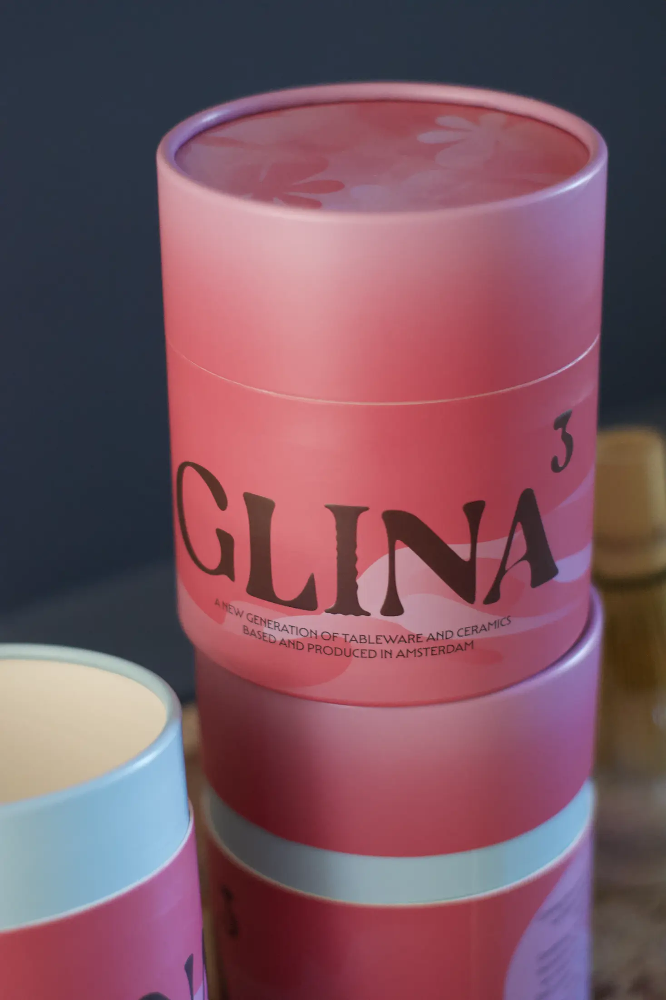
designer · creative producer · Amsterdam
Aleksandra Chargeishvili
Amsterdam-based designer and creative producer.
I work between emerging technologies and visual communication, finding clear visual forms for complex ideas and creating experiences people can enter, use and remember.
currently available for a new role · Amsterdam · no sponsorship needed
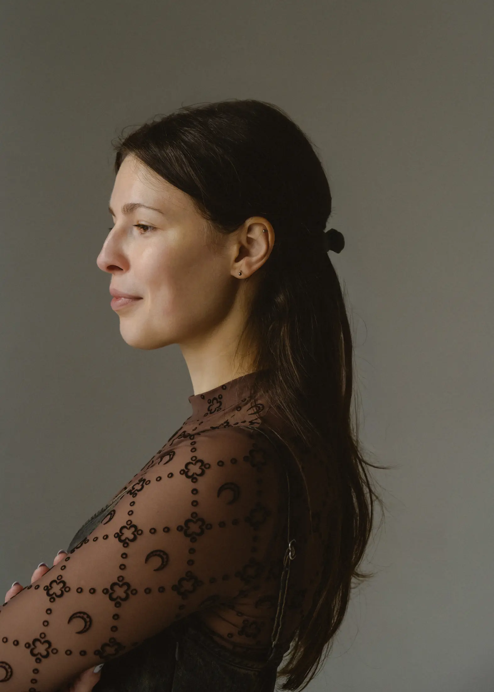
now / soon ✶
October 2026
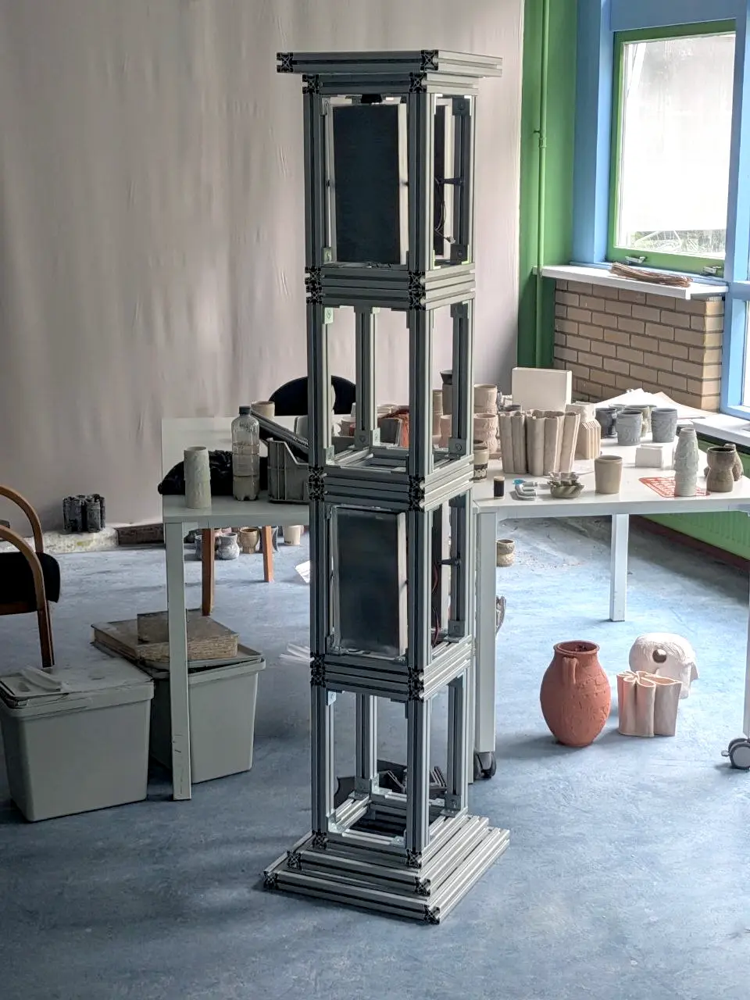
MADART Foundation — Season 03: INLINE
Showing Sculptural Column at NIO House Amsterdam · 21 October 2026–17 January 2027. Curated by Justin Karijoredjo. Opening night: 21 October, 18:00–21:00
selected work — hover / click around
six longer stories
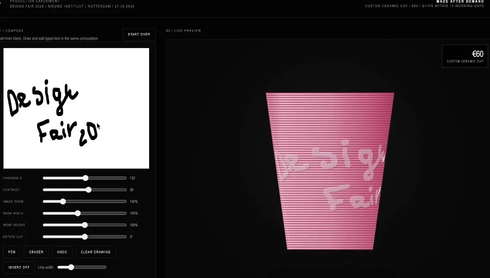
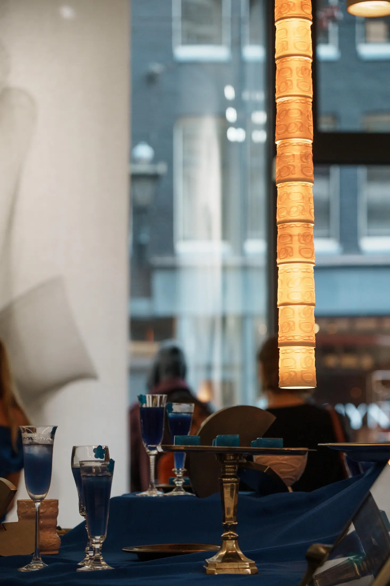
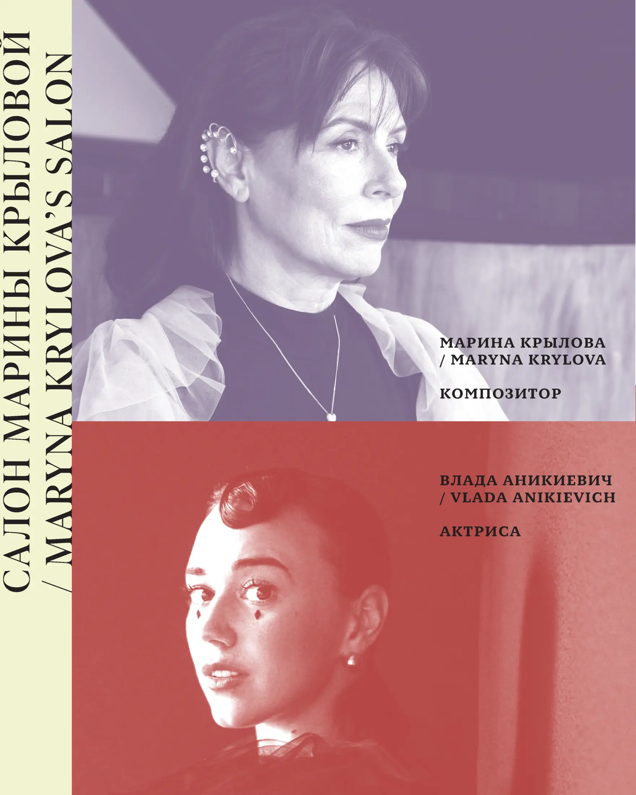
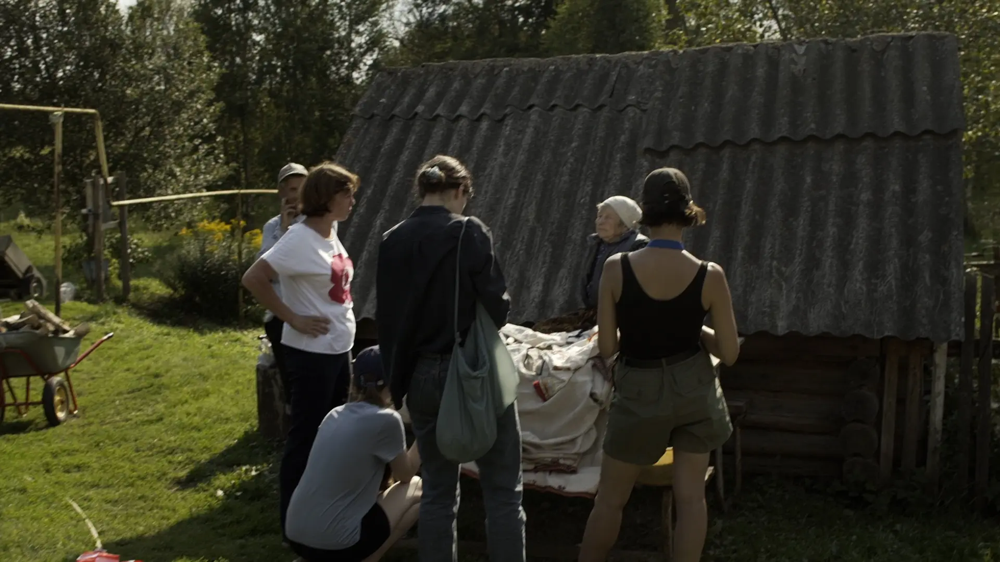
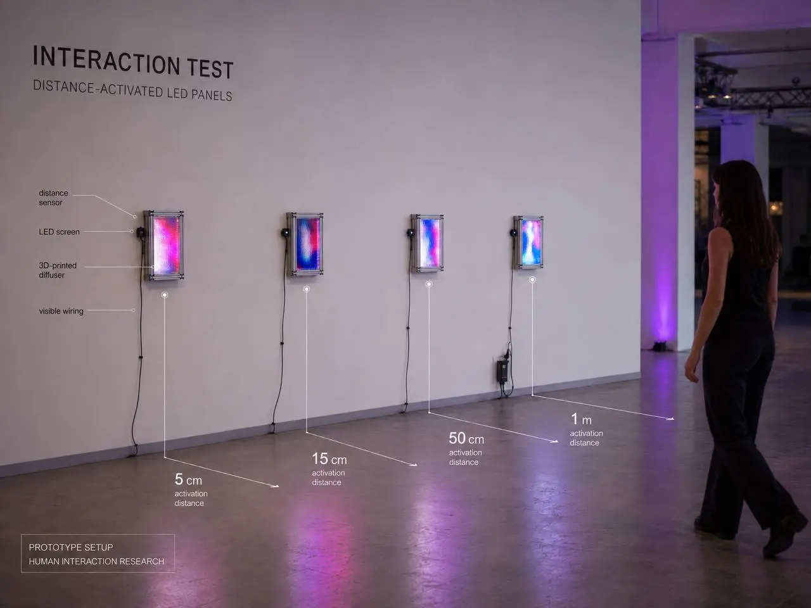
more things I have made
shorter notes
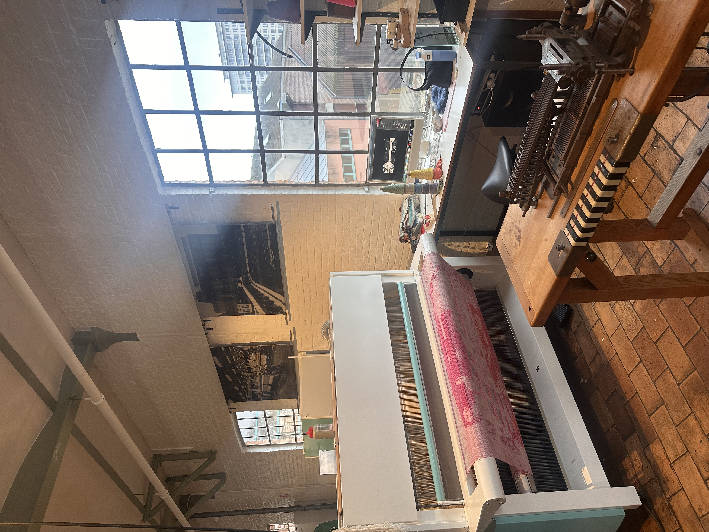
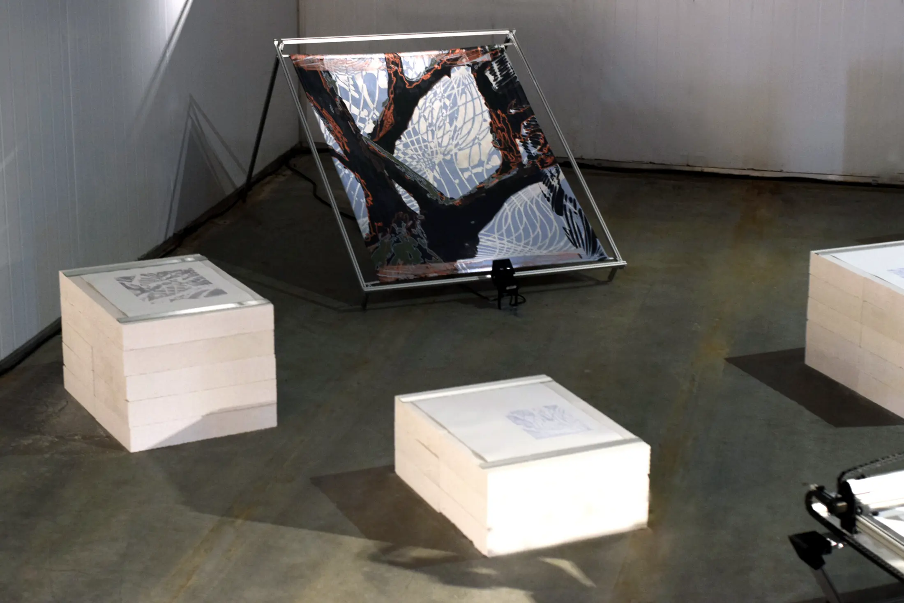
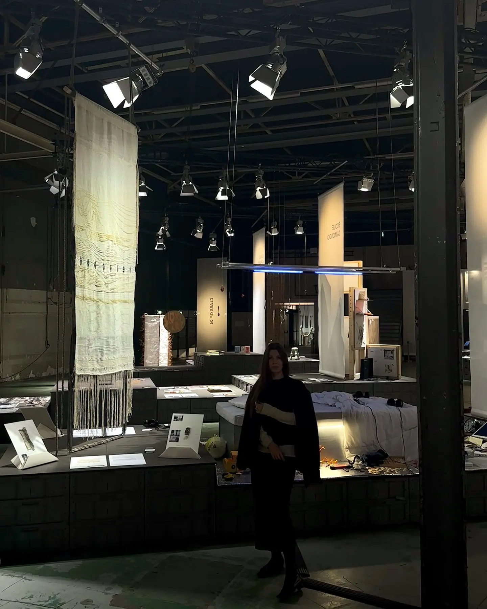
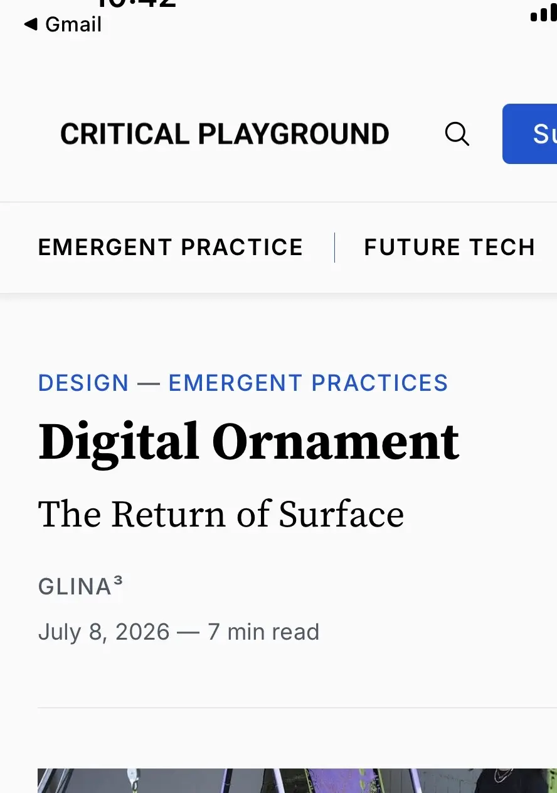
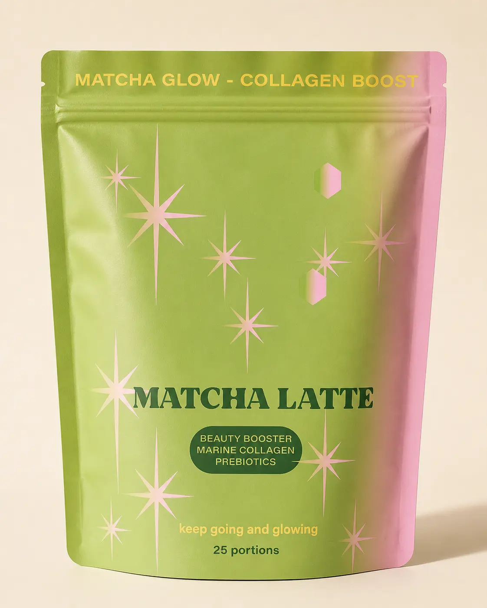
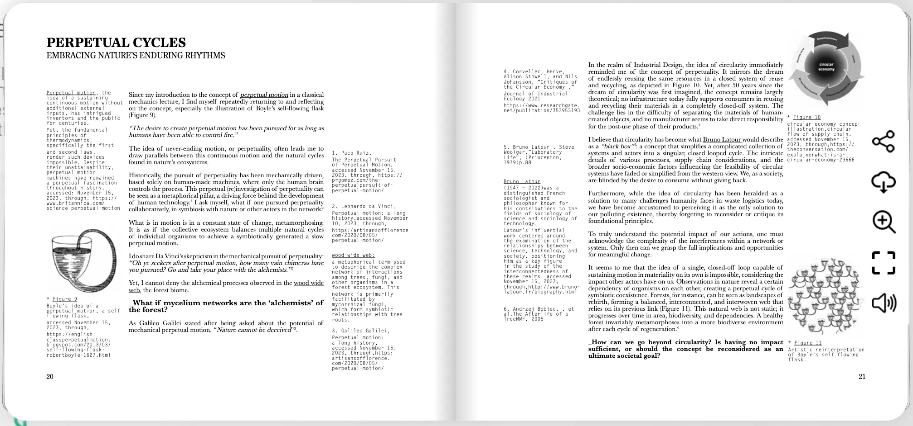
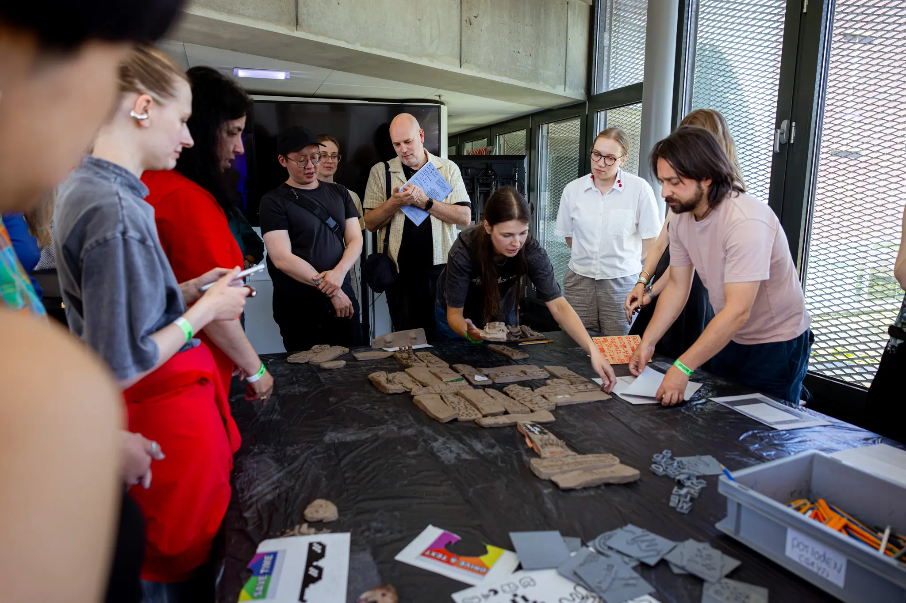
some numbers, because projects also live in the real world :)
- 7.2K audience built from zero
- 2.6M views on one Reel
- 150–300K monthly reach
- ~30 qualified enquiries
- €20K event budget
- 12 / 23 min interviews / film
about
I am an Amsterdam-based designer and creative producer making digital content, visual identities, websites, publications, objects and installations.
I work between emerging technologies and visual communication, finding clear visual forms for complex ideas and creating experiences people can enter, use and remember.
- moving image, editing & visual storytelling;
- art direction, identity & graphic design;
- websites, interfaces & interactive work;
- objects, materials, clay & textile;
- exhibitions, events & workshops;
- content, audience & analytics;
- Figma, AI tools, Adobe CC, Meta, Eventbrite & Notion;